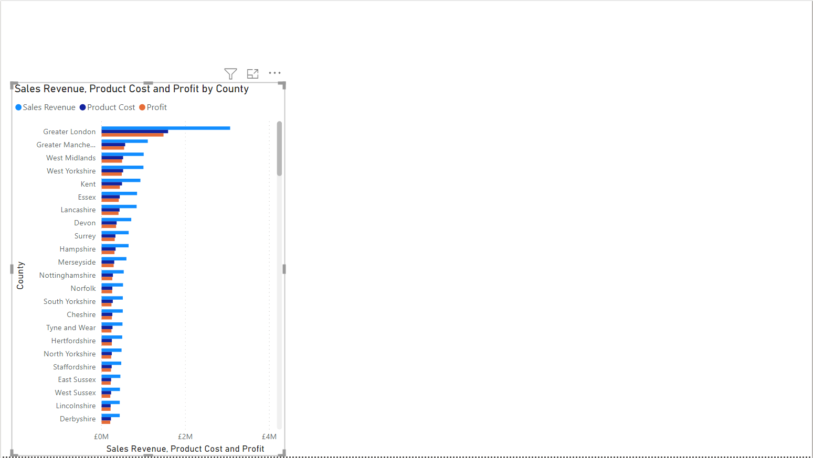
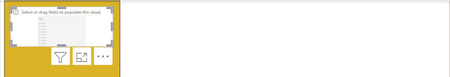
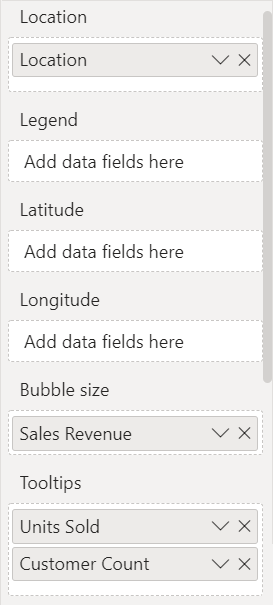
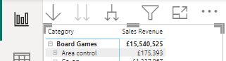

- Configure
 1. Map visual by selecting it first, then:
1. Map visual by selecting it first, then:
- Drag Location from the Customers table into the
Location well
- Drag Gender from Customers into the Legend well
- Drag Sales Revenue from Sales into the Bubble size well
- Configure
 2. Area chart visual by selecting it first, then:
2. Area chart visual by selecting it first, then:
- Drag Financial Year from the Sales table into the
X-axis well
- Drag Gender from Customers into the Legend well
- Drag Sales Revenue from Sales into the Y-axis well
- Configure
 3. Donut chart visual by selecting it first, then:
3. Donut chart visual by selecting it first, then:
- Drag Country from the Customers table into the Legend well
- Drag Sales Revenue from Sales into the Values well
- Configure 4. Ribbon chart visual by selecting it first, then:
- Drag Subcategory from the Products table into the
X-axis well
- Drag Age Group from Customers into the Legend well
- Drag Sales Revenue from Sales into the Y-axis well
- Hover your mouse cursor over the ribbon chart then click on the ellipsis (…) at the top right then click Sort axis > Subcategory then click on the ellipsis (…) again, click Sort axis > Sort ascending
- For the area chart click on the ellipsis (…) at the top right then click
Sort axis > Financial Year then click on the ellipsis (…) again, click Sort axis > Sort
ascending
- Optionally use the Format
 option, per visual to change the Data colors
option, per visual to change the Data colors
- At the top left of the window, click Save
- Next, click on the Sales by County page tab, where in the next exercise,
our focus is using slicers in a range of ways for controlling other visualisations, including some new visuals we
have not used yet.
Exercise 3 – Design slicers
In this exercise we will create the last two pages of our report which will feature slicers. Slicers
allow us to create selectable entries on our report, like our chiclet visual earlier, to filter other visuals. We will
use more than one slicer on a page and show you how to control which slicer updates which visuals. We will start with
a single slicer and move onto the multi-slicer example on the last page of the report.
Sales by County
- To create a visual in a slightly different way, in the Fields pane,
expand the Customer table and place a tick next to County, a map
visual will be added
- With the map visual selected, click on the Clustered bar chart in the Visualization pane
- Drag the following fields from the Sales table into the X-axis well:
- Sales Revenue
- Product Cost
- Profit
- Resize the visualisation to occupy the bottom left of the page as shown below:

- Deselect the visualisation by clicking in the white space of the page
- Next place a tick next to Sales Revenue in the Sales table within the Fields pane
- With the visual selected, change it to a Matrix
 visual, in the Visualizations
pane
visual, in the Visualizations
pane
- Drag the County field from Customers into the Rows well
- Next drag Financial Year from the Sales table into the Columns well

- Drag and resize the visualisation to take up the space at the bottom right of the page, play
around with the size and position until you are happy, but leave about ¼ free at the top of the page

- With the Matrix visual selected, click on the Format button and expand Grid then
expand Boarder and change the Color
- Deselect the visualisation by clicking in the white space of the page
- From the Customers table, place a tick next to the Age Group field
- Resize and position this Table visual at the top right of the page
- Drag Customer Count from the Customers table into
the Values field
- Position your mouse cursor over the Customer Count column, then click on
the down arrow to sort by this column

- Next drag the Units Sold from the Sales table into the Columns field, then do the same for the Sales Revenue field and you
will gain two more columns in the table
- Click on the Format button and expand Grid then expand Boarder
and change the Color
- Next, we will add our slicer to filter the data on this page, deselect the visualisation by
clicking in the white space of the page
- Place a tick next to the Sales Region field in the Customers table, then with the visual selected, in the Visualizations
pane, change the visual from Table to Slicer

- In the Format options for the selected slicer expand the Slicer settings drop down
and set Style to Tile
- Expand the Selection options and switch Show “Select
all” option to On
- The resultant page should look like this, note that if your buttons in your slicer look
different, to try resizing the visual

- Note there is a small area of space at the top right of the page, using what we practiced in
exercise 1, add an image to this area, and use the picture named House Rules Slogan from
your download pack

- Test the slicer by clicking on Northern Region, Central Region or Southern Region to filter the data, click Select all to choose all regions
- Once you have confirmed the operation of the slicer works, select the final page of the report Sales by Region
Sales by Region
- On the page, add a new rectangle shape from the Insert tab in the ribbon
and place it on the left side of the page as a menu bar
- With the rectangle selected locate the Format shape pane and expand the
Style settings to change the Fill colour to yellow and the Boarder colour to black (you can vary this based on your preferences)
- Next, deselect the shape, then add a Slicer to the page from the Visualizations pane
- Position the slicer at the top of the rectangle shape

- Drag the Sales Region field from the Customers
table into the Field well of the selected slicer
- Once the regions are present, resize the slicer visual if needed
- Repeat this process again, adding a new slicer to the area below the previous slicer, within the
rectangle
- Add the property County to the slicer
- Position the slicer as follows:

- It is tricky to distinguish English counties from Scottish and Welsh in this slicer, perhaps we
can improve this?
- Drag the Country field from the Customers table,
above the County field as shown
below

- Expand the countries in the slicer to reveal related counties (you may notice there are some
anomalies e.g. Leicester is a city, not a county which is a result of customers entering data into the wrong fields,
we have some steps to rectify this at the end of the manual if it is something you would like to see corrected)
- Deselect the visual, and add a new Map visual that utilises the remaining space on the page
- Add the following fields to the map visuals configuration:

- Use the Format button to access the Bubbles drop down, then expand Colors
- Click on the fx button to the right of the Default
color
- In the Minimum, select a colour, we may choose red to show low sales
- In the Maximum value, pick a colour, we may choose green to show good
sales (you will need to select More colors to pick a green)
- Optionally tick the Add a middle color tick box if you would prefer a
middle colour
- Once ready, click OK and use your mouse scroll wheel to zoom in on the
map
- Place your mouse cursor over one of the large bubbles on the map, it should give you tool tips
including units sold and customer count
- Next, using the top slicer, select Southern Region, you will notice the
in the hierarchy slicer, the Wales and Scotland disappears, click Southern Region again to
undo this filter (again there is some inaccurate data which we can optionally rectify at the end of the manual)
- If you select Derbyshire from England in the
second slicer, we lose all sales regions apart from the Central Region ideally, we always
want to show our sales regions, rather than them being filtered
- We can stop a visual from being impacted by a slicer by editing interactions, with the larger Slicer visual selected, click on the Format tab of the ribbon, then
choose Edit interaction

- You are aiming to click on the None
 icon above the upper slicer however, this can be tricky
in a condensed report so you may need to move the other slicer temporarily (remember to select the slicer once you
have repositioned the other visual)
icon above the upper slicer however, this can be tricky
in a condensed report so you may need to move the other slicer temporarily (remember to select the slicer once you
have repositioned the other visual)
|

|
When editing the interactions, some have accidentally turned off the interaction for the
rectangle behind the slicers, rather than the slicer itself. Take care to ensure you are altering the correct
object to make this update work. The icon will be shaded darker when clicked.

|
- In the ribbon, click on Edit interactions to turn this mode
off
- If you needed to resize the visual, please take the opportunity to resize it back to its original
shape, now when counties are picked the other slicer’s regions are not filtered, navigate to the Sales Summary page click Save at the top right of your window to
commit your changes
Optional – Add an additional page
Because our product overview page is lacking some detail, we will create our last page in our report
which will utilise our product hierarchy to provide a more tabular view of the product data alongside the types of
products purchased such as online, store etc. If you are running short on time you can skip this exercise.
- Create a new page in your report and rename it Product Revenue
Breakdown
- Click and drag the page tab over to the other Product Overview page so
that they are together

- With the page open, add a Matrix visual to the page
- With the visual selected, drag the Product Category hierarchy from the Products table into the Rows well and drag the Sales Revenue field from the Sales table into the Values well
- With the matrix visual selected, click on the Format option, expand the Grid drop down, then expand the Options drop down and set the Row padding to 0
- With the visual still selected, click on Expand all down one level in the
hierarchy which is at the bottom of the
selected visual
- Drag the resize handles to make the visual full height, but leave a little bit of space at the
top of the visual where the drill control buttons will populate

- Deselect the current visual, then add a Line and stacked column chart
visual
- Resize it to take up the remaining space on the page
- Configure its fields as follows:
- X-axis = Financial Year
- Column y-axis = Sales Revenue
- Line y-axis = Units Sold
- Column legend = Purchase Type